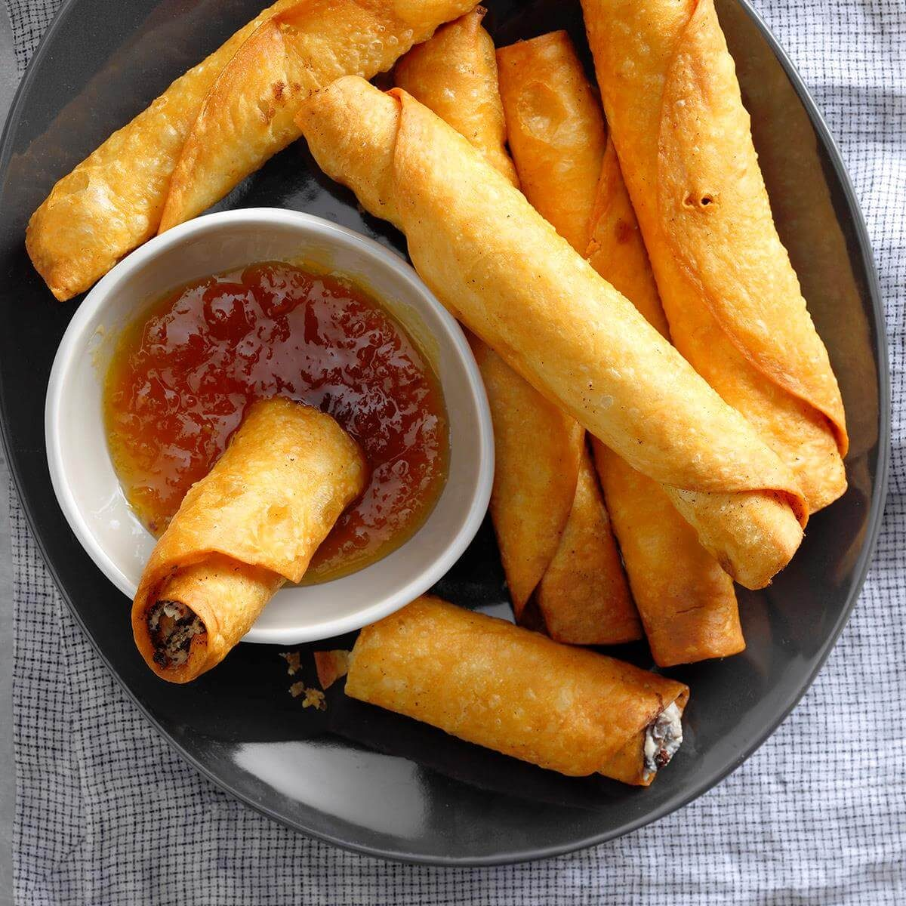

Recipe Collection
Appetizers
Start your meal off right with these delicious appetizers. From classic bruschetta to spicy buffalo wings, there's something for everyone to enjoy.
Classic Bruschetta
Ingredients:
- 1 baguette, sliced
- 2 cups diced tomatoes
- 2 garlic cloves, minced
- Fresh basil leaves
- Olive oil
- Salt and pepper to taste
Instructions:
- Preheat oven to 375°F (190°C).
- Brush baguette slices with olive oil and toast until golden brown.
- Mix tomatoes, garlic, basil, olive oil, salt, and pepper in a bowl.
- Top each baguette slice with the tomato mixture and serve.
Main Courses
Discover a variety of main course recipes that are perfect for any occasion. From hearty pasta dishes to flavorful stir-fries, these recipes are sure to impress your family and friends.

Spaghetti Bolognese
Ingredients:
- 1 lb ground beef
- 1 onion, chopped
- 2 garlic cloves, minced
- 1 can (28 oz) crushed tomatoes
- 2 tbsp tomato paste
- 1 tsp dried oregano
- 1 tsp dried basil
- Salt and pepper to taste
- Spaghetti, cooked
Instructions:
- Cook ground beef in a skillet until browned. Drain excess fat.
- Add onion and garlic to the skillet; cook until softened.
- Stir in crushed tomatoes, tomato paste, oregano, basil, salt, and pepper.
- Simmer for 20 minutes, stirring occasionally.
- Serve sauce over cooked spaghetti and garnish with fresh parsley or Parmesan.
Desserts
Indulge your sweet tooth with these delectable dessert recipes. From rich chocolate cakes to light and fluffy cheesecakes, there's a dessert for every craving.

Chocolate Cake
Ingredients:
- 1 3/4 cups all-purpose flour
- 3/4 cup cocoa powder
- 2 cups sugar
- 1 1/2 tsp baking soda
- 1 1/2 tsp baking powder
- 1 tsp salt
- 2 eggs
- 1 cup milk
- 1/2 cup vegetable oil
- 2 tsp vanilla extract
- 1 cup boiling water
Instructions:
- Preheat oven to 350°F (175°C). Grease and flour two 9-inch round pans.
- In a large bowl, mix dry ingredients. Add eggs, milk, oil, and vanilla. Mix until smooth.
- Stir in boiling water (batter will be thin).
- Pour into pans and bake for 30-35 minutes. Cool before frosting.
Beverages
Quench your thirst with these refreshing beverage recipes. From fruity smoothies to classic cocktails, these drinks are perfect for any time of day.

Strawberry Smoothie
Ingredients:
- 1 cup fresh strawberries
- 1/2 cup yogurt
- 1 tbsp honey
- 1/2 cup milk
Instructions:
- Combine all ingredients in a blender.
- Blend until smooth and creamy.
- Pour into a glass and serve chilled.